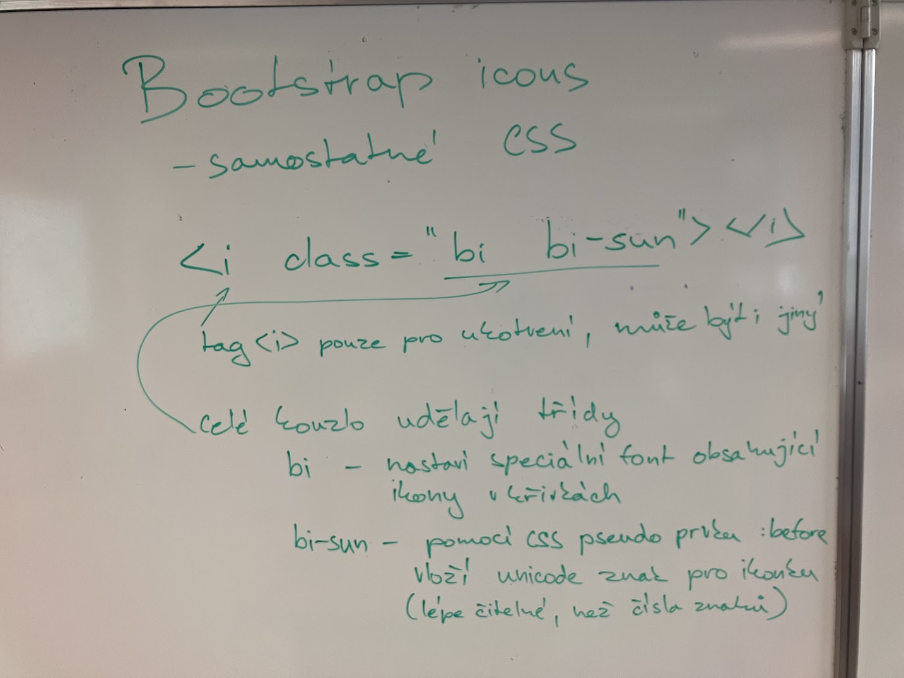

Zapisky z hodiny 19.1.
Bootstrap ikony
- samostatné css
- to je potřeba importovat z bootstrap webovek
- command na import :
<link rel="stylesheet" href="https://cdn.jsdelivr.net/npm/bootstrap-icons@1.11.3/font/bootstrap-icons.min.css"> - díky tomuto css souboru můžeme využívat jeho tříd, které dělají celé "kouzlo"
- bi - nastaví specialní font, který obsahuje ikony v křivkách
- bi-sun pomocí CSS pseudo prvku: before vloží unicode znak pro ikonku - to je lépe čitelné než čísla znaků 